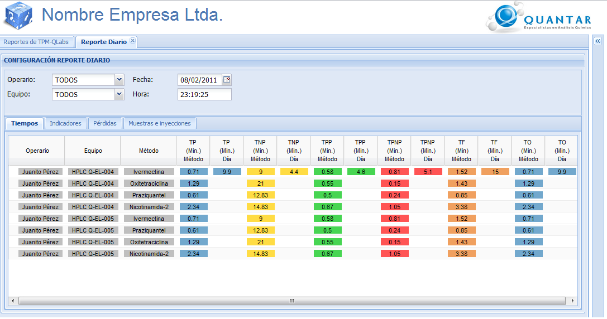
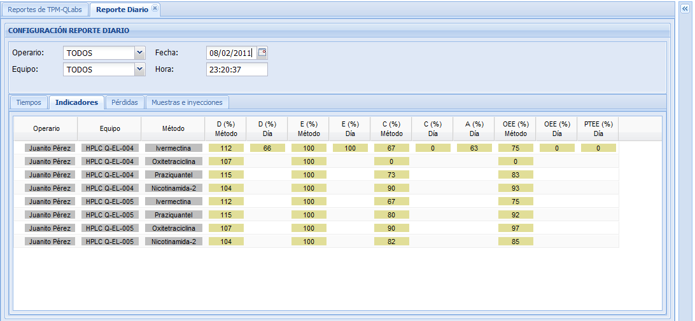
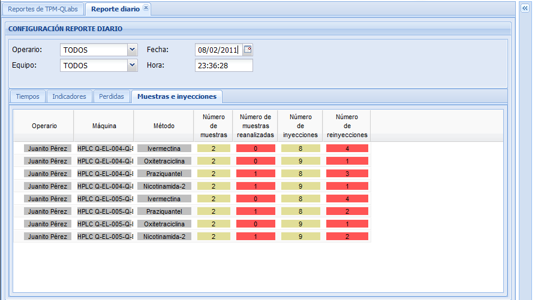
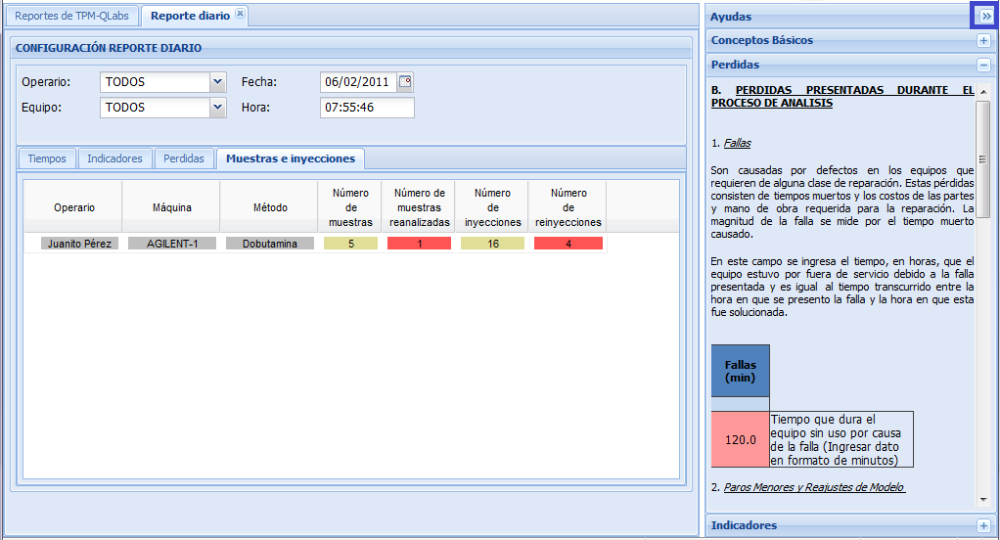
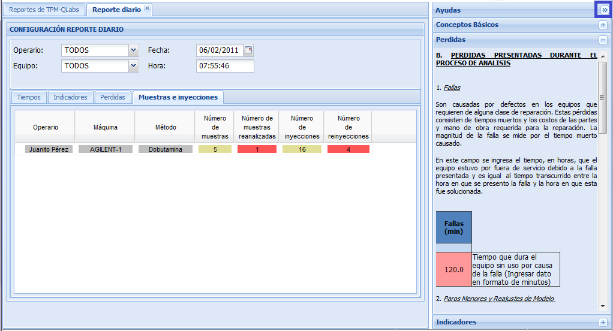

MANUAL DE USUARIO
TPM-QLabs - REPORTE DIARIO
El reporte diario mediante la opción multireporte, le muestra información de tiempos, indicadores, pérdidas y muestras e inyecciones durante un día específico. Ver figuras 1, 2, 3 y 4.
Reporte diario de tiempos
Este reporte despliega una Pantalla como la que se muestra en la figura 1, y contiene la siguiente información.
- Operario: nombre del analista que opero el equipo.
- Equipo: nombre del equipo en el cual se realizaron las corridas analíticas.
- Método: nombre del método aplicado.
- Tiempo Programado (TP): es el tiempo de operación de un equipo sin ningún tipo de pérdidas, es decir, es el tiempo realmente productivo de un equipo. El TP Se determina directamente por cálculos utilizando los tiempos estándar de operación (Tiempos predeterminados en las metodologías oficiales). Se utilizan los “tc” estándares para el cálculo y permite comparar y detectar pérdidas o mejoras en eficiencia por modificación de los tiempos de corrida.
Si no hay variación en los tiempos estándar de análisis entonces : Tiempo Programado = Tiempo Operativo
- Tiempo No Programado (TNP): son los tiempos muertos entre métodos de análisis sin contar el tiempo de alistamiento y el tiempo perdido por fallas del equipo. Los TNP afectan el aprovechamiento de los equipos.
- Tiempo de Paradas Programas (TPP) : pérdida programada al inicio y al final de todo cambio de método para alistamiento y/o lavado del sistema analítico. También se incluye el tiempo destinado a mantenimientos programados. Al igual que los tiempos no programados el TPP afecta el aprovechamiento de los equipos de laboratorio.
- Tiempo de Paradas No Programadas (TPNP): son las pérdidas en las que hay que trabajar sistemáticamente ya que se deben eliminar o minimizar puesto que son las que afectan directamente los procesos.
- Tiempo de Funcionamiento (TF): es el tiempo durante el cual el equipo está funcionando sin incluir los tiempos de alistamiento. Se toma como base el tiempo calendario que puede ser el año , mes o día (24 hrs)
- Tiempo de Operación (TO): es el tiempo productivo del equipo. A diferencia del Tiempo Programado ( TP que es un Tiempo Operativo teórico), se calcula con los tiempos actuales de análisis.
- Consolidados de TP , TNP , TPP , TPNP , TF y TO del día: Tiempos totales del día.

Figura 1. Pantalla de reporte diario de tiempos.
Reporte diario de indicadores
Este reporte despliega una Pantalla como la que se muestra en la figura 2, y contiene la siguiente información.
Este reporte despliega una Pantalla como la que se muestra en la figura 2, y contiene la siguiente información.
- Operario: nombre del analista que opero el equipo.
- Equipo: nombre del equipo en el cual se realizaron las corridas analíticas.
- Método: nombre del método aplicado.
- Disponibilidad (D): mide las pérdidas de disponibilidad debida a paradas no programadas. La
expresión de cálculo para su determinación es la siguiente :
D = (TO / TF) x 100
- Eficiencia (E): mide
las pérdidas de rendimiento causadas por mal funcionamiento del equipo
ó por velocidad inferior a la que se ha determinado previamente.
Se determina por la expresión :
E = (Tiempo Tacto) x (N° Análisis Realizados) x 100 / TO
Donde :
Tiempo de Tacto (Min./Inyección)= Tiempo estándar de Inyección + Tiempo estándar entre inyecciones
N° Piezas Producidas = N° Total de Inyecciones (No se incluyen reinyecciones)
TO = Tiempo Operativo
También puede usarse la expresión :
E = (TP / TO) x 100
- Calidad (C): mide las pérdidas de tiempo utilizado en reprocesos o reanalisis
Se determina por la expresión :
C = (Total de Análisis Realizados)-(Reanálisis) / Total de Análisis Realizados
- Efectiviidad global del equipo (OE): es la medida de la Disponibilidad, la Eficiencia y la Calidad de los equipos.
Expresión de cálculo para el OEE = D x E x C
- Consolidado de
indicadores de calidad, disponibilidad, eficiencia, aprovechamiento,
efectividad global y productividad total del equipo en el día.

Figura 2. Pantalla de reporte diario indicadores.
Reporte diario de pérdidas
Este reporte despliega una Pantalla como la que se muestra en la figura 3, y contiene la siguiente información.
Este reporte despliega una Pantalla como la que se muestra en la figura 3, y contiene la siguiente información.
- Operario: nombre del analista que opero el equipo.
- Equipo: nombre del equipo en el cual se realizaron las corridas analíticas.
- Método: nombre del método aplicado.
- Número de muestras reanalizadas : número de muestras reanalizadas.
- Número de reinyecciones: número de reinyecciones.
- Paros Menores: son pérdidas causadas por interrupciones en los equipos, atoramientos, funcionamiento anómalo o tiempos de espera. En general no se pueden registrar estas pérdidas directamente, por lo que se utilizan cálculos para determinar su valor . En este tipo de pérdida no se daña el equipo.
- Retrabajos: pérdidas
por resultados de análisis que están fuera de las especificaciones,
obtenidos durante operaciones normales. Estos análisis tienen que ser
repetidos y las pérdidas consisten en el tiempo adicional de trabajo
necesario para obtener resultados analíticos aceptables.
- Fallas: son causadas
por defectos en los equipos que requieren de alguna clase de
reparación. Estas pérdidas consisten de tiempos muertos y los costos de
las partes y mano de obra requerida para la reparación. La magnitud de
la falla se mide por el tiempo muerto causado.
En este campo se muestra el tiempo, en minutos, que el equipo estuvo por fuera de servicio debido a la falla presentada y es igual al tiempo transcurrido entre la hora en que se presento la falla y la hora en que esta fue solucionada.
- Perdidas de velocidad: son causadas por reducción de la velocidad de operación. También a velocidades más altas de operación ocurren defectos de calidad y paros menores frecuentemente.

Figura 3. Pantalla de reporte diario de pérdidas.
Reporte diario de muestras e inyecciones
Este reporte despliega una Pantalla como la que se muestra en la figura 4, y contiene la siguiente información.
Este reporte despliega una Pantalla como la que se muestra en la figura 4, y contiene la siguiente información.
- Operario: nombre del analista que opero el equipo.
- Equipo: nombre del equipo en el cual se realizaron las corridas analíticas.
- Método: nombre del método aplicado.
- Número de muestras: número de muestras analizadas programadas.
- Número de muestras reanalizadas: número de muestras reanalizadas (Pérdidas).
- Número de inyecciones: número de inyecciones programadas.
- Número de reinyecciones: número de reinyecciones (Pérdidas).

Figura 4. Pantalla reporte diario de muestras e inyecciones.
Ayudas
Si tiene dudas sobre los conceptos mostrados, utilice la ayuda que se despliega al lado derecho de la pantalla.

Si tiene dudas sobre los conceptos mostrados, utilice la ayuda que se despliega al lado derecho de la pantalla.

Figura 5. Pantalla de ayudas conceptuales.